<div class="container">
  <div id="contents" class="col-md-12 main-content"><h1 xmlns="http://www.w3.org/1999/xhtml" id="toc-id-9">Flat and isometric working drawings</h1>


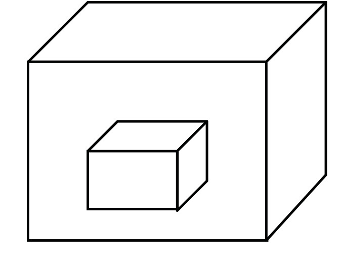 

<figcaption xmlns="http://www.w3.org/1999/xhtml">Figure 1</figcaption>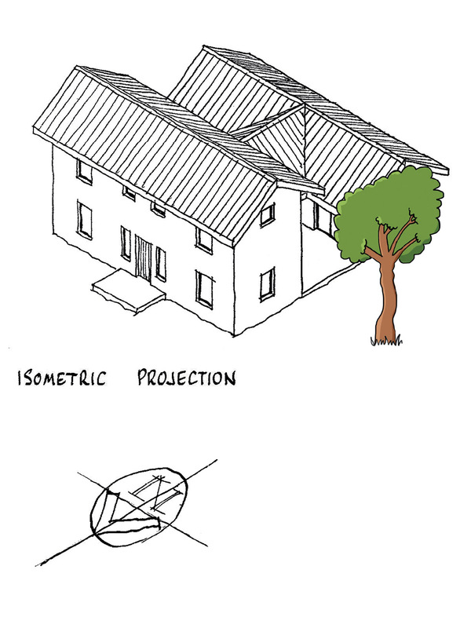 

<figcaption xmlns="http://www.w3.org/1999/xhtml">Figure 2</figcaption>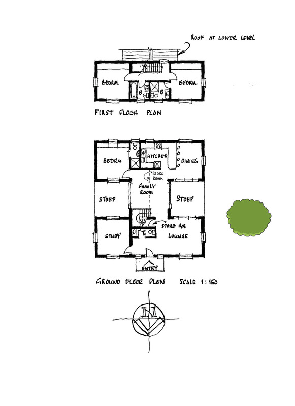 

<figcaption xmlns="http://www.w3.org/1999/xhtml">Figure  3</figcaption>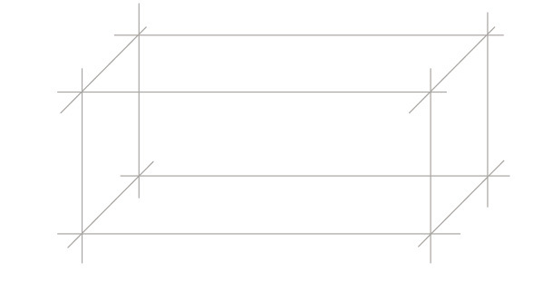


<figcaption xmlns="http://www.w3.org/1999/xhtml">Figure 4</figcaption><li xmlns="http://www.w3.org/1999/xhtml">
<p class="x--Body-investigation-hanging"> These lines are
also referred to as solid lines. They are slightly thicker and
darker than construction lines.</p>
</li>
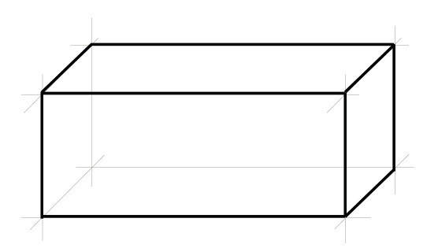 

<figcaption xmlns="http://www.w3.org/1999/xhtml">Figure 5</figcaption>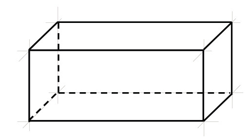


 


<figcaption xmlns="http://www.w3.org/1999/xhtml">Figure 6</figcaption><b xmlns="http://www.w3.org/1999/xhtml">chain dash-dot
lines</b>.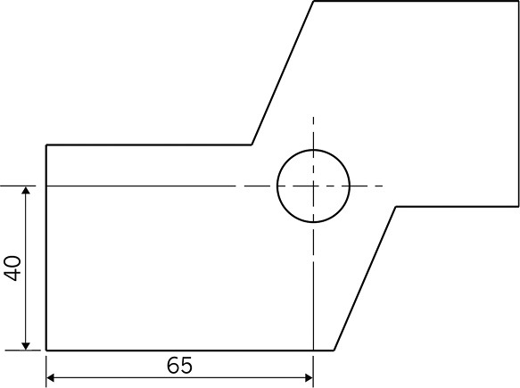 

<figcaption xmlns="http://www.w3.org/1999/xhtml">Figure 7</figcaption>


<figcaption xmlns="http://www.w3.org/1999/xhtml">Figure 8</figcaption>
<span xmlns="http://www.w3.org/1999/xhtml" class="char-style-override-3">scale</span>. But how does this
work?<li xmlns="http://www.w3.org/1999/xhtml" class="x--Body-text-bullet">
<span class="char-style-override-11"/>
<b>Scale 1:1</b> This is
full scale and means that a centimetre in your drawing shows
a centimetre in real life.</li>

<li xmlns="http://www.w3.org/1999/xhtml" class="x--Body-text-bullet">
<span class="char-style-override-11"/>
<b>Scale 1:2</b> This
means that a centimetre in your drawing shows two centimetres
in real life.</li>
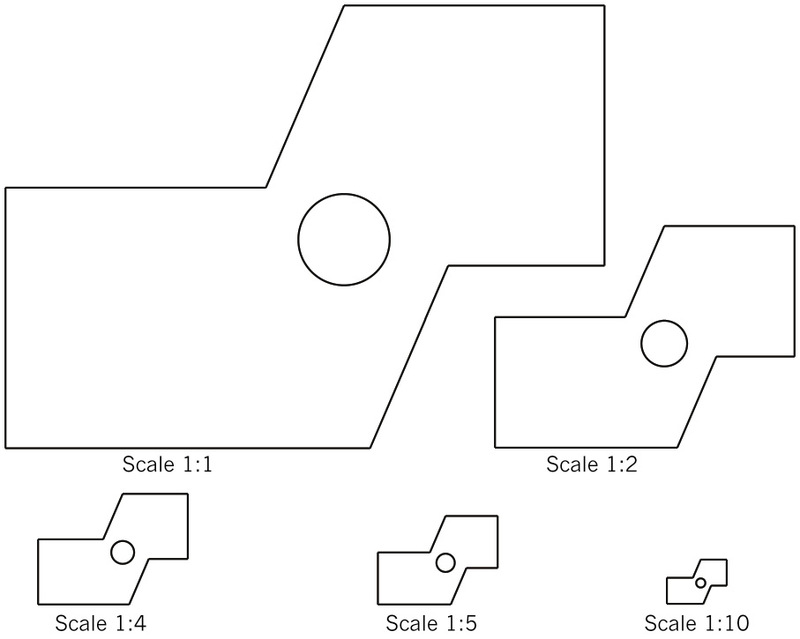 

<figcaption xmlns="http://www.w3.org/1999/xhtml">Figure 9</figcaption>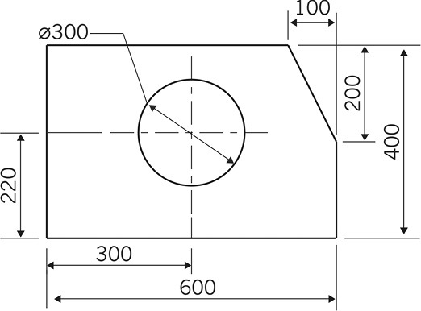


<figcaption xmlns="http://www.w3.org/1999/xhtml">Figure 10</figcaption>

<li xmlns="http://www.w3.org/1999/xhtml" class="x--Body-investigation-hanging para-style-override-36">Redraw this object to a scale of 1:5. Use a ruler to make this
drawing and all the other drawings in this chapter. Use a
compass to draw the circle.

<ul><li class="x--Body-text-bullet para-style-override-54">
<span class="char-style-override-11"/> Show
dimensions.</li>

<li class="x--Body-text-bullet para-style-override-54">
<span class="char-style-override-11"/> Show the
centre lines of the circle.</li>

<li class="x--Body-text-bullet para-style-override-55">
<span class="char-style-override-11"/> Show the
scale.</li>
</ul></li>
<li xmlns="http://www.w3.org/1999/xhtml" class="x--Body-investigation-hanging--1-3- para-style-override-56">The lady only sees the red part of the block. Make a sketch of
the red part on the grid below.<figure><figcaption>Figure 11</figcaption></figure><p/>


 </li>


<li xmlns="http://www.w3.org/1999/xhtml" class="x--Body-investigation-hanging">Make a 1:10 scale
drawing of the front part of this object.</li>

<li xmlns="http://www.w3.org/1999/xhtml" class="x--Body-text-bullet para-style-override-54">
<span class="char-style-override-11"/> Show
hidden lines.</li>

<li xmlns="http://www.w3.org/1999/xhtml" class="x--Body-text-bullet para-style-override-54">
<span class="char-style-override-11"/> Show
dimensions.</li>

<li xmlns="http://www.w3.org/1999/xhtml" class="x--Body-text-bullet para-style-override-54">
<span class="char-style-override-11"/> Show the
scale.</li>
 

<figcaption xmlns="http://www.w3.org/1999/xhtml">Figure 12
</figcaption><span xmlns="http://www.w3.org/1999/xhtml" class="Basic-Graphics-Frame">
</span> 


<figcaption xmlns="http://www.w3.org/1999/xhtml">Figure 13: Oblique view</figcaption>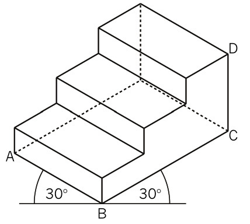 

<figcaption xmlns="http://www.w3.org/1999/xhtml">Figure 14: Isometric drawing</figcaption><div xmlns="http://www.w3.org/1999/xhtml" class="frame-7">
<p class="x--Body-box-no-indent">The word "isometric" comes
from the words "iso" and "metric".</p>

<p class="x--Body-box-no-indent">"Iso" means "the same", and
"metric" means "measurement".</p>
</div>
<li xmlns="http://www.w3.org/1999/xhtml" class="x--Body-investigation-hanging para-style-override-38">Make
an isometric drawing of the chalk box on the right on the
isometric grid. Use a scale of 1:2. <ul><li class="x--Body-text-bullet para-style-override-54">
<span class="char-style-override-11"/> Show
hidden lines.</li>

<li class="x--Body-text-bullet para-style-override-54">
<span class="char-style-override-11"/> Show
dimensions.</li>

<li class="x--Body-text-bullet para-style-override-54">
<span class="char-style-override-11"/> Show the
scale.</li>
</ul><figure>
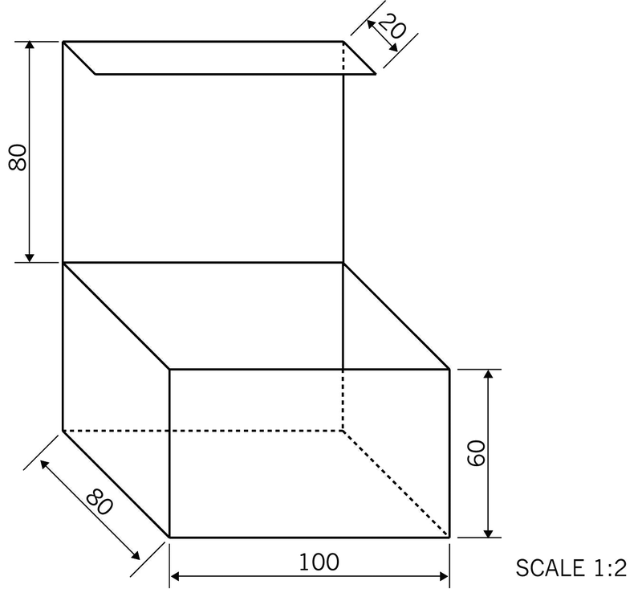
<figcaption>Figure 15</figcaption></figure></li>
<li xmlns="http://www.w3.org/1999/xhtml" class="x--Body-investigation-hanging">Make an isometric
drawing of the piano on the right on the isometric grid. Use
a scale of 1:25.

<ul><li class="x--Body-text-bullet para-style-override-54">
<span class="char-style-override-11"/> Show
hidden lines.</li>

<li class="x--Body-text-bullet para-style-override-54">
<span class="char-style-override-11"/> Show
dimensions.</li>

<li class="x--Body-text-bullet para-style-override-54">
<span class="char-style-override-11"/> Show the
scale.</li>
</ul></li>


<figcaption xmlns="http://www.w3.org/1999/xhtml">Figure 16</figcaption>
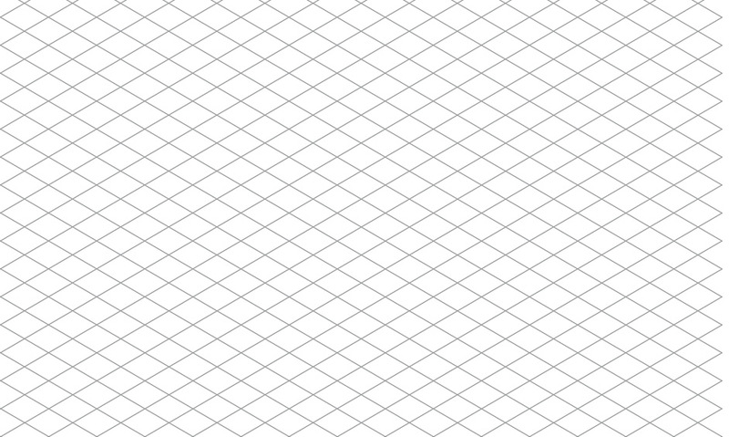
  </div>
</div>